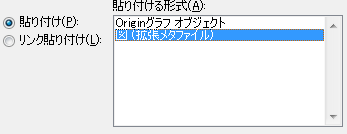
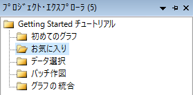
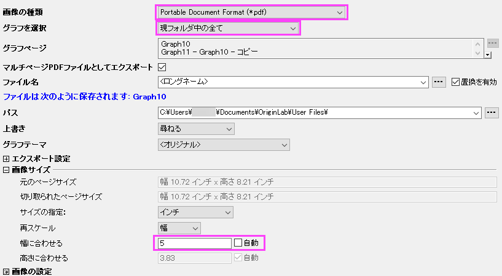

グラフの出力
GSB-publish-graph-tutorial
このレッスンでは、グラフの出力に利用できる様々なオプションを学習します。
他のアプリケーションへのグラフ貼り付け
- レッスン４：グラフの統合と編集 で保存したプロジェクトを開きます。最後に作成したグラフウィンドウをクリックして選択します。
- メインメニューの 編集：ページコピー またはショートカット CTRL+Jで グラフページをコピーします。
- Microsoft® Wordを開き、Ctrl+V を押します。ワードにグラフが埋め込みオブジェクトとして貼り付けられます。
- Wordのグラフをダブルクリックします。Originが新規に開きます。ここでは、グラフとグラフに関連するデータだけが、プロジェクトの中で利用出来ます。
- フォーマット：作図の詳細（ページ属性） から、ページレベルの 作図の詳細 ダイアログを開きます。右のパネルにて、背景の色を 表示 タブから選択して変更します。色 を 明るい灰色 に設定します。OKをクリックします。
- メインメニューのファイル：終了して（文書１）に戻るを選択します。Originは閉じられ、文書中のグラフイメージは更新されます。
- グラフページをコピーするには、手順1〜2を繰り返します。その後、Word文書に戻り、グラフの選択を解除してEnterキーを押して文書内の新しい行に移動します。ホーム タブ下で、貼り付けアイコンをクリックします。ドロップダウンリストから形式を選択して貼り付け を選択します。
- 開いたダイアログで、図（拡張メタファイル）を選択してOKを押します。Originのグラフが画像として貼り付けられます。画像をダブルクリックすると、図の書式設定ダイアログが開きます。

 | Word や PowerPointのようなアプリケーションに埋め込みオブジェクトとしてOriginのグラフが貼り付けられた場合は、グラフを構成する全てのデータもWord 文書に保存されます。これにより、グラフをダブルクリックすると、新規にOriginが立ち上がり、編集が出来るようになります。しかし、文書中にオブジェクトとして、沢山のグラフがあり、それらのグラフを構成するデータが大きい場合、文書の容量も大きくなります。
|
グラフをパワーポイントに送る
- Originのグラフウィンドウをアクティブにして、グラフをパワーポイントに送る ボタン
 を押します。
を押します。
- 開いたダイアログの設定はデフォルトのままにして、 送信をクリックします。PowerPoint ファイルの新しいスライドとして、グラフが貼り付けられます。
- グラフのタイトルバーで右クリックし、ショートカットをお気に入りに追加 を選択します。プロジェクト・エクスプローラー の お気に入り フォルダに、このグラフが追加されます。

- プロジェクト・エクスプローラー にある、初めてのグラフ フォルダを選択します。次に、グラフウィンドウを選択し、タイトルバーで右クリックして、ショートカットをお気に入りに追加 フォルダを選択します。必要に応じて、プロジェクト内の他のグラフウィンドウからショートカットを追加します。
- プロジェクト・エクスプローラー に移動し、お気に入り フォルダをアクティブにします。下のパネルで、何も選択せず白色の部分で右クリックし、メニューから、表示モード：より大きいアイコンを使用 を選択します。これにより、より大きいアイコンでグラフが表示されます。
| お気に入り フォルダのアイコンをダブルクリックし、閲覧や編集のためにグラフを開きます。グラフのアイコンまたはグラフウィンドウのタイトルバーで右クリックし、開いたコンテキストメニューから元のフォルダに戻るを選択します。
|
- プロジェクト・エクスプローラー の上部パネルにあるお気に入り フォルダの上で右クリックし、PowerPointにグラフを送る を選択します。ダイアログが開いたらデフォルト設定のまま進みます。フォルダ内の全てのグラフがパワーポイントに送られます。なお、この操作はお気に入りフォルダだけでなく、他の全てのフォルダで行うことが出来ます。
| ダイアログには、プロジェクトにある全てのグラフを、名前でグラフを特定して、パワーポイントに送るオプションがあります。操作に先だって準備したパワーポイントファイルにある特定のスライドの複製に、グラフを配置することが出来ます。
|
スライドショー
- プロジェクト・エクスプローラー の上部パネルにあるお気に入り フォルダの上で右クリックし、グラフのスライドショー を選択します。
- ダイアログではデフォルト設定のまま進みます。スライドショーがスタートします。次のグラフ、前のグラフを見るには、矢印キーを使います。
| プロジェクト・エクスプローラーの下のパネルの何もないところで右クリックし、表示モード の 詳細 を選択します。下のパネルのタイトルバーを右クリックして、スライドにチェックを入れます。列の順番はドラッグで変更することが出来ます。追加された スライド 列を使ってグラフの順番を変更します。 スライド列のヘッダ部分で一度クリックすると、グラフの順番をドラッグで設定することが出来ます。この順番は、スライドショーやパワーポイントへのグラフの出力、外部への画像出力の操作の際に適用されます。
|
グラフエクスポート
- プロジェクト・エクスプローラーに戻り、下のパネルからグラフの統合 フォルダを選択します。
- ファイル：グラフエクスポート(詳細) を選択し、次のダイアログボックスの設定を変更します。
- 画像の種類 のドロップダウンメニューから、 Portable Document Format (*.pdf) を選択します。
- グラフを選択 のドロップダウンリストから、現フォルダ中の全て を選択します。
- 画像サイズ の欄を開き、 幅に合わせるのテキストボックスに、5 と入力します。

- OKボタンをクリックして、ダイアログを閉じます。
- 画面左端のメッセージログ タブをクリックします。エクスポートされたパスが表示されます。デフォルト設定では、このパスはユーザファイルフォルダ（UFF）に設定されています。パスをコピーし、Windows Explorerに貼り付けて所定のフォルダを開きます。Originから出力されたPDFファイルを見つけることが出来ます。
プロジェクトファイルを保存します。